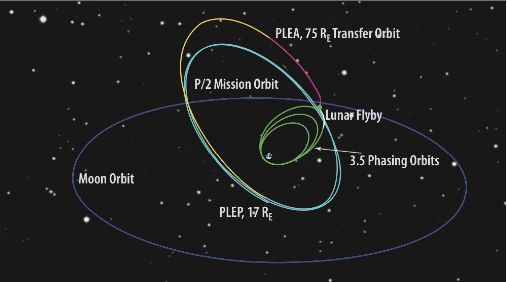
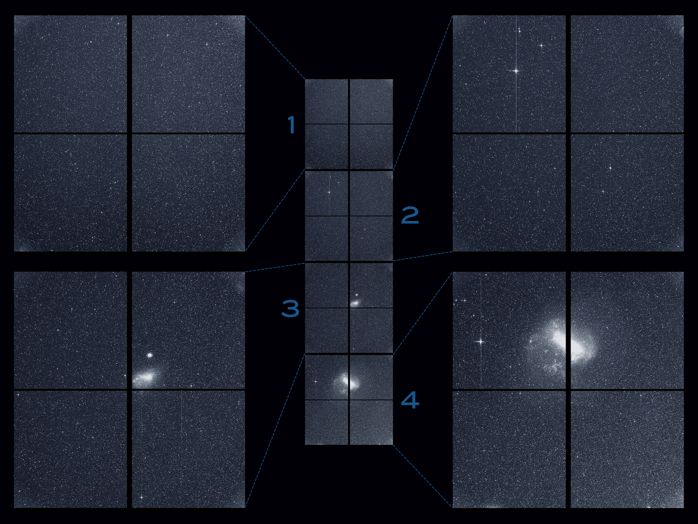
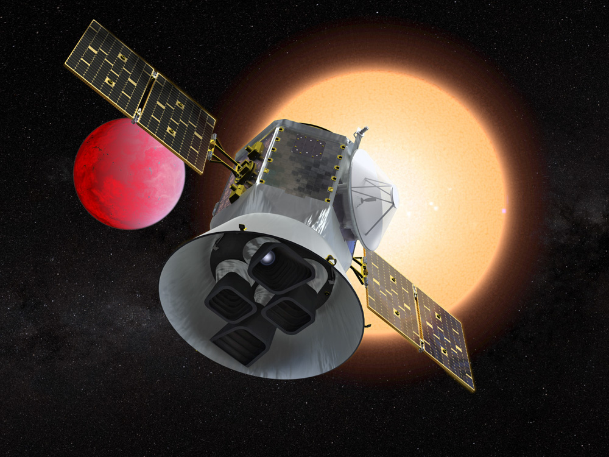

The Transiting Exoplanet Survey Satellite (TESS) is a NASA-sponsored Astrophysics Explorer-class mission that is performing a near all-sky survey to search for planets transiting nearby stars. The primary goal of TESS is to discover planets smaller than Neptune that transit stars bright enough to enable follow-up spectroscopic observations that can provide planet masses and atmospheric compositions.
Launch and orbit
TESS launched successfully on April 18, 2018 from Cape Canaveral Air Force Station aboard a SpaceX Falcon 9 rocket.
The Falcon 9 is a 2 stage, liquid oxygen and kerosene fueled rocket. The first stage is reusable and has 9 Merlin 1D engines, the second stage has a single Merlin engine. The system is designed for safe and efficient transport of satellites, cargo, and eventually crew, to low-earth orbit. TESS is the first NASA Astrophysics satellite mission to be launched under a contract with SpaceX.
TESS observes from a unique elliptical high Earth orbit (HEO) that provides an unobstructed view of its field to obtain continuous light curves and a more stable platform for precise photometry than the low Earth orbit. The launch carried the observatory to parking orbit inclined by 28.5 degrees. The high Earth orbit was achieved through a series of propulsion system burns and a lunar flyby. Two burns raised the orbit apogee to 400,000 km, one at perigee of the first phasing orbit and another at perigee of the second phasing orbit. Another small adjustment was made before a lunar gravitational assist raised the ecliptic inclination to ~40 degrees. The final apogee and ~13.7 day orbital period were achieved through a final period-adjustment maneuver after the lunar flyby. Final orbit was achieved around 60 days after launch and regular science operations began July 25, 2018.

Schematic of maneuvers and encounters leading to the final TESS orbit (light blue). The observatory orbits with a period of ~13.7 days in a 2:1 resonance with the Moon. PLEA and PLEP are the post-lunar-encounter-apogee and -perigee, respectively. Image Credit: Ricker et al. (2015)
The nominal perigee and apogee of of the elliptical orbit are 17 Earth radii and 59 Earth radii, respectively. The exact orbital period varies between 12-15 days. The orbit places the spacecraft in a 2:1 resonance with the Moon and is inclined with respect to the Ecliptic plane. This avoids lengthy eclipses of the Earth and Moon through the FOV. The large apogee and perigee keep the spacecraft above the Earth's radiation belts and provide a nearly constant thermal environment for the stable -75 degrees C operation of the CCDs. The orbit is operationally stable due to the Moon leading or lagging the apogee by about 90 degrees, effectively averaging out lunar perturbations. The period and semi-major axis are relatively stable, with long term inclination and eccentricity exchanges over periods of 8-12 years. There are additional short term perturbations caused by the Sun with a period of 6 months. The TESS high Earth orbit is stable for decades or longer and requires no propulsion for station-keeping.
At the TESS orbit perigee (varies between 12-20 Earth radii), science operations are interrupted for no more than 16 h to point TESS's antenna toward Earth, downlink data, and resume observing. This timeframe includes the nominal 4-h period for Ka-band science data downlink using NASA's Deep Space Network (DSN). TESS will also use its hydrazine thrusters to unload angular momentum built up from solar photon pressure at perigee and throughout the orbit.
Science operations
TESS began regular science operations on July 25, 2018. In the 2-year prime mission, TESS monitored over 200,000 main-sequence dwarf stars with four wide-field optical CCD cameras to detect periodic drops in brightness caused by planetary transits. Photometry of these pre-selected targets was recorded every 2 minutes. TESS also obtained full-frame images (FFIs) of the entire, four camera field-of-view (24 x 96 degrees) at a cadence of 30 minutes to facilitate additional science, see the data products page
In July of 2020 TESS entered into its first extended mission that started. In this extension the TESS mission changed to become a more community focused science mission. A new 20-second cadence data mode was introduced, and the FFI cadence changed from 30-minutes to 10-minutes.
TESS will enter into its second extension of the mission in September, 2022. During this second extension the FFI cadence will change to 200 seconds.

The first light image from TESS, showing the combined view of all four of its cameras taken on August 7, 2018. Image Credit: NASA/MIT/TESS
From Kepler to TESS
NASA's Kepler Mission was, during its 4 year prime mission from 2009-2013, a statistical transit survey designed to determine the frequency of Earth-sized planets around other stars. Kepler revealed thousands of exoplanets orbiting stars in its 115 square degree field-of view, which covered about 0.25 percent of the sky. While Kepler was revolutionary in its finding that Earth-to-Neptune-sized planets are common, the bulk of the stars in the Kepler field lie at distances of hundreds to thousands of parsecs, making it difficult to obtain ground-based follow-up observations for many systems.
The TESS Mission is designed to survey over 85% of the sky (an area of sky 400 times larger than covered by Kepler) to search for planets around nearby stars (within ~200 light years). TESS stars are typically 30-100 times brighter than those surveyed by the Kepler satellite. Planets detected around these stars are therefore far easier to characterize with follow-up observations, resulting in refined measurements of planet masses, sizes, densities, and atmospheric properties.

The TESS Mission will discover new Earths and super-Earths in the solar neighborhood. Image Credit: NASA
TESS mission organization
The TESS Mission is led by the Massachusetts Institute of Technology (MIT), which is responsible for the overall direction of the mission. The TESS Science Office (TSO) is a partnership between MIT's Physics Department and Kavli Institute for Astrophysics and Space Research and the Smithsonian Astrophysical Observatory. The TESS Science Office analyzes the science data and organizes the co-investigators, collaborators, and working groups. The MIT Lincoln Laboratory led the science camera development and construction.
NASA's Goddard Space Flight Center (GSFC) provides project management, systems engineering, and safety and mission assurance. The TESS Science Support Center (TSSC) at GSFC operates the Guest Investigator Program and supports the science community proposing for new science with TESS.
The spacecraft is operated by Northrop Grumman Innovation Systems. This includes mission operations at the Mission Operation Center.
The data are processed by the Science Processing Operations Center (SPOC) at NASA Ames Research Center. For more information about the TESS data pipeline see the data handling page.
All TESS raw and processed data are made publicly available through the Mikulski Archive for Space Telescopes (MAST), operated by the Space Telescope Science Institute (STScI), see our data access page for more information.
TESS Guest Investigator program
The TESS Mission has a robust Guest Investigator Program (GI program) that is managed by the TESS Science Support Center at NASA Goddard Space Flight Center. Under the GI program, the astrophysics community may propose new 2 minute and 20 second cadence targets and investigations using the FFI data. TESS GI calls for proposals occur once per year and are announced within the NASA ROSES solicitation. About 200,000 targets will be available for each GI program cycle during the extended mission.
The TESS GI program welcomes proposals including, but not exclusive to, exoplanet, stellar, extragalactic, and solar system science. For specific guidelines on proposing targets through the GI program, visit our proposal page.